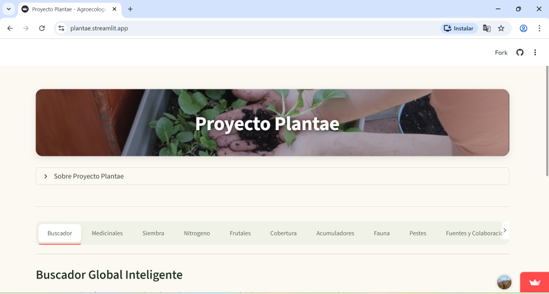
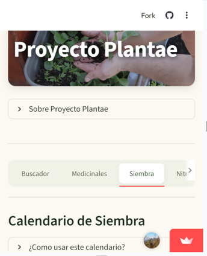
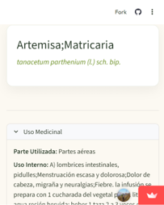

Herramienta en Desarrollo
Proyecto Plantae
Herramienta de consulta avanzada diseñada para centralizar y democratizar el acceso a conocimientos críticos sobre agroecología, regeneración y agroforestería.

Herramienta de consulta avanzada diseñada para centralizar y democratizar el acceso a conocimientos críticos sobre agroecología, regeneración y agroforestería.

Proyecto Plantae integra múltiples bases de datos para que agricultores y regeneradores tomen decisiones informadas:
Base de datos inteligente de cultivos con requerimientos específicos de riego, suelo y asociaciones beneficiosas para maximizar la biodiversidad y salud sistémica.

Lleva el control de tus siembras y tareas directamente al terreno. La interfaz móvil permite registrar acciones en tiempo real, asegurando que ningún dato se pierda.
Encuentra rápidamente información sobre cualquier especie en tu sistema y monitorea su evolución. Ideal para proyectos de restauración y huertos urbanos complejos.

Plantae es una herramienta de monitoreo (MEL) que permite evidenciar la regeneración de la capa vegetal y la biodiversidad en el tiempo.
Ver sistemas de monitoreo